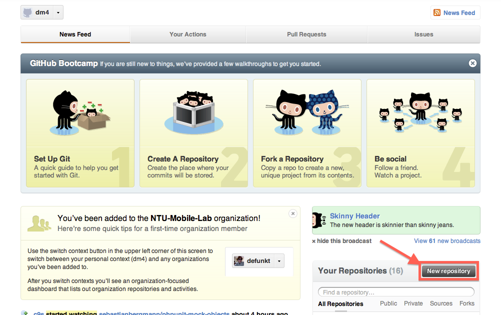
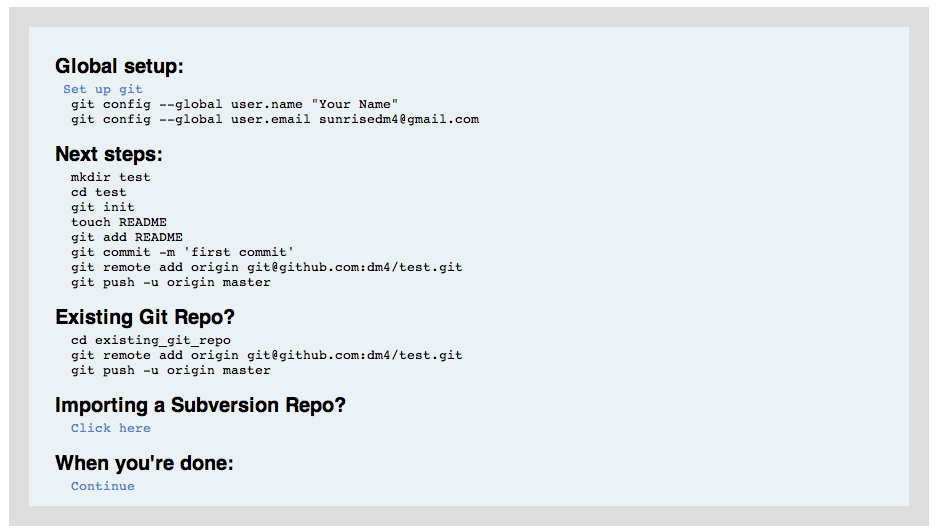
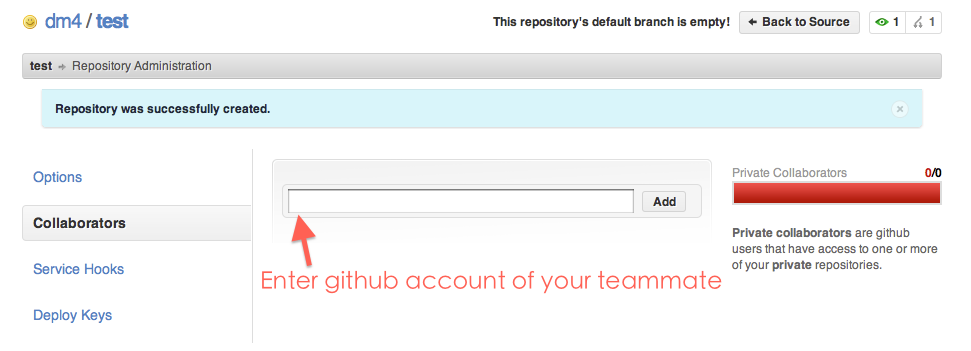

Local VCS
- like
cp -reach version 
cp -r each version


Set your name & email
$ git config --global user.name "dm4"
$ git config --global user.email "sunrisedm4@gmail.com"
$ git config --global color.ui true
Create new
$ mkdir project
$ cd project
$ git init
$ vim README
$ git add README
$ git commit # type commit log in editor
Create from existed repository
$ git clone /path/to/existed/repository
mastergit branch$ git branch new_feature
$ git checkout new_feature
$ vim README
$ git add README
$ git commit
$ git checkout master
$ git merge new_feature
git clonegit addgit commitgit statusgit loggit showgit branchgit checkoutgit mergegit pushgit pull

$ cd project
$ git remote add origin git@github.com:dm4/test.git
$ git push -u origin master

git clone, git pull to prevent downloading all the slides$ git clone git://github.com/dm4/NTU-CSIE-IntroCS-Lab-Slides.git
After we push new slides to github, you can...
$ git pull
Make sure you write down your student id / name / github id in commit log!
Meng-Han Lee (dm4) /
#